Desarrollo
3.1 Probabilidad discreta
La probabilidad discreta se refiere a un enfoque de la teoría de la probabilidad que se utiliza cuando estamos tratando con un conjunto finito o
numerable de resultados posibles en un experimento. En este contexto, cada resultado en el conjunto se asocia con una probabilidad específica, y
estas probabilidades deben cumplir ciertos principios fundamentales:
Axioma 1 (No negatividad): Para cualquier resultado individual, la probabilidad asociada (denotada como P(wi)) debe ser igual o mayor que cero (pi ≥ 0).
Axioma 2 (Probabilidad total): La suma de las probabilidades de todos los resultados en el conjunto de resultados posibles debe ser igual a 1 (Σpi = 1).
Esto significa que al considerar todos los resultados posibles, la probabilidad de que uno de ellos ocurra es 100%.
Axioma 3 (Propiedad de aditividad): Si tenemos eventos mutuamente excluyentes (eventos que no pueden ocurrir simultáneamente), la probabilidad de que al
menos uno de ellos ocurra es igual a la suma de las probabilidades individuales de esos eventos. En otras palabras, si A1, A2, ... son eventos disjuntos,
entonces P(A1 U A2 U ...) = P(A1) + P(A2) + ...
Tomemos como ejemplo el lanzamiento de una moneda. En este caso, el espacio muestral discreto Ω se compone de dos resultados posibles: cara (w1) y cruz (w2).
Asociamos una probabilidad a cada resultado:
P(w1) = p1: Probabilidad de obtener cara.
P(w2) = p2: Probabilidad de obtener cruz.
Si la moneda es regular y simétrica, es razonable suponer que la probabilidad de obtener cara (p1) es igual a la probabilidad de obtener cruz (p2). Por lo tanto,
p1 = p2. Además, debido al Axioma 2, la suma de estas probabilidades debe ser igual a 1: p1 + p2 = 1
Resolviendo esta ecuación, encontramos que p1 = p2 = 1/2. Esto significa que en un lanzamiento de una moneda justa y simétrica, la probabilidad de obtener cara o cruz
es del 50% cada una, lo que cumple con los axiomas de la probabilidad. [2]
3.2 Probabilidad condicional
Definición:
Cuando tenemos dos eventos, A y B, que están relacionados en un conjunto de posibles resultados, siempre y cuando la probabilidad de que ocurra el evento B no sea
igual a cero, podemos calcular la probabilidad condicional de que el evento A ocurra dado que el evento B ya ha ocurrido. Esta probabilidad condicional se denota
como P(A | B) y se calcula dividiendo la probabilidad de que ambos eventos A y B ocurran juntos por la probabilidad de que ocurra el evento: [1]
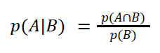
Teorema:
La probabilidad condicional del complemento de A es igual a 1 menos la probabilidad condicional de A. [1]
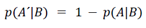
Para una mejor comprensión de la definición de probabilidad condicional, consideremos el siguiente escenario: imaginemos que ha tenido lugar un evento A y
nos preguntamos cuál es la probabilidad de que otro evento B ocurra en las mismas circunstancias. Por ejemplo, si hemos extraído un naipe rojo de una baraja
estándar de 52 cartas, ¿cuál es la probabilidad de que la carta seleccionada sea el as de corazones?
“Si afirmamos que el evento A ya ha tenido lugar, podemos considerar que A se convierte en nuestro espacio muestral, ya que sabemos que no ha ocurrido
ningún elemento x ∈ Ā .” [3]
En este contexto, resulta lógico evaluar la probabilidad de que el evento B ocurra también, basándonos en la proporción del tiempo en el que A y B se producen
simultáneamente. De hecho, esto es a lo que se refiere la probabilidad condicional de que B ocurra dado que A ya ha ocurrido.
Un diagrama de Venn es una herramienta que se emplea para representar visualmente las relaciones entre conjuntos. En el contexto de la probabilidad condicional,
se utiliza para ilustrar la intersección entre dos eventos. Para entender su utilidad, consideremos lo siguiente: tenemos dos eventos, A y B, relacionados con
un experimento E, y estamos interesados en la probabilidad condicional de que el evento B ocurra dado que ya ha ocurrido el evento A, lo cual denotamos como
P(B | A).
“Cuando calculamos P(B | A) estamos calculando la probabilidad de que ocurra B dentro del subconjunto A del espacio muestral original S. En contraste, cuando
calculamos P(B), estamos evaluando cuán probable es que ocurra B en el contexto de todo el espacio muestral S. Al calcular P(B | A), nos enfocamos en la
probabilidad de que B ocurra, sabiendo que estamos en A.” [4]
En otras palabras, el espacio muestral se ha reducido de S a A.
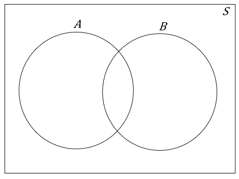
Por lo tanto, la probabilidad condicional se utiliza para verificar conjuntos de suposiciones o hipótesis. Además, es importante destacar que una de sus
aplicaciones más significativas consiste en simplificar el cálculo de las intersecciones de eventos en ciertos experimentos.
Considerando que:
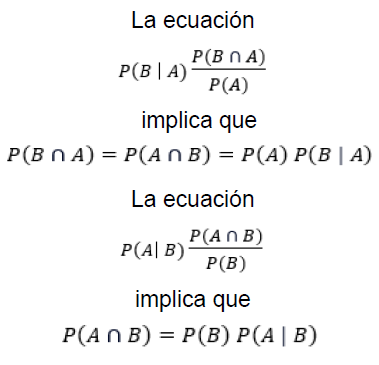
3.3 Independencia
Definición:
Decimos que dos eventos, A y B, son independientes cuando la probabilidad de que ocurra el evento A no cambia, independientemente de si el evento B ocurre o
no. En otras palabras, A y B son eventos independientes si la probabilidad condicional de que ocurra A dado que ocurrió B es igual a la probabilidad original
de que ocurra A. Esto se expresa matemáticamente como:
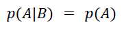
O de manera equivalente, cuando la probabilidad de que ambos eventos A y B ocurran juntos es igual al producto de las probabilidades individuales de A y B es decir:
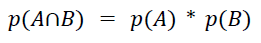
Independencia de más de dos sucesos
Sean A1, A2 ... An , sucesos de cierto espacio muestral; diremos que ellos son mutuamente independientes (o simplemente, independientes) cuando para cualquier
grupo de sucesos diferentes Ai, Aj ... Am se cumple que:
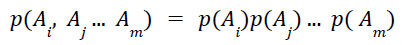
Para que n sucesos sean independientes no es suficiente que sean independientes dos a dos, es decir, que dos cualesquiera de ellos sean independientes. [1]
En muchos problemas prácticos, nos encontramos con pruebas que son mutuamente independientes, lo que significa que el resultado de una prueba no afecta el resultado
de otra. Para comprender mejor este concepto, consideremos un experimento que consiste en n pruebas independientes. “Esto se cumple si y sólo si: el espacio muestral
S es el producto Cartesiano de n conjuntos S1, S2, ..., Sn y la probabilidad de que ocurra un evento de un solo elemento A⊂S es el producto de las probabilidades
de ocurrencia de los eventos correspondientes de un solo elemento, Ai⊂Si, i = 1, 2, ..., n. En otras palabras, p(A)=p1(A1)p2(A2). . .pn(An), donde A⊂S, Ai⊂Si, y A,
Ai, ..., An son eventos de un solo elemento.” [4]
De acuerdo con lo anterior, el espacio muestral de un experimento que consiste en n pruebas independientes se compone de n factores. Por lo tanto, las probabilidades
de los eventos de un solo elemento se asignan de una manera particular, lo que facilita el cálculo de diversas posibilidades. Aunque en la mayor parte de las aplicaciones
no necesitamos verificar todas las condiciones, puesto que generalmente suponemos la independencia con base en lo que sabemos acerca del experimento.
Es importante destacar que si A y B son eventos independientes, se cumple la siguiente relación:
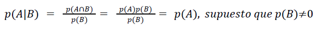
En otras palabras, cuando A y B son independientes, la probabilidad de que ocurra A no se ve afectada por la ocurrencia de B. “Saber que B ha ocurrido no modifica
la probabilidad de que A ocurra. De manera equivalente, podemos afirmar que p(A|B) = p(B) si y sólo si A y B son independientes.” [4]
Comúnmente las definiciones de independencia y mutua exclusividad se confunden, en gran parte debido a que en la comunicación cotidiana, la palabra "independiente"
a menudo se interpreta como que dos eventos no pueden ocurrir simultáneamente. Esto nos lleva a la conclusión de que dos eventos son mutuamente excluyentes cuando no
pueden suceder al mismo tiempo, tal como se establece en la siguiente definición: "A y B son mutuamente excluyentes si y sólo si A∩B=∅" [4].
Al comparar esta definición con la de independencia, resulta evidente que son conceptos completamente diferentes.
También existe la independencia de tres eventos, la cual señala que A,B,C son independientes, si sólo si:
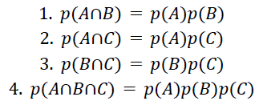
Para este caso en el que se presentan tres eventos, cabe la posibilidad de que las tres primeras condiciones anteriores no lleguen a implicar a la cuarta y viceversa.
3.4 Teorema de Bayes
Sea A un suceso y B1, B2 ... Bn una serie de sucesos disyuntos tales la ocurrencia de A va necesariamente acompañada por la ocurrencia de uno de ellos.
Se conocen las probabilidades de los Bi como también las probabilidades condicionales de A dado cada uno de los Bi. Sabiendo ahora que A ocurrió, se desea
calcular la probabilidad de cada Bi dada esta información. [1]
Tenemos que:
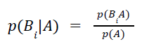
Lo que resulta en:
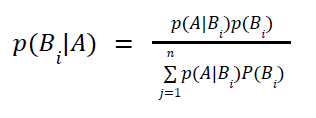
Supongamos que el Sr. K se somete a una prueba médica para determinar si tiene una enfermedad en particular. Esta prueba tiene limitaciones y no es perfecta.
Antes de la prueba, tenemos ciertas creencias iniciales sobre si el Sr. K tiene la enfermedad o no. Estas creencias se expresan como probabilidades a priori, es
decir, la probabilidad inicial de que el Sr. K tenga la enfermedad (P(B1)) y la probabilidad inicial de que no la tenga (P(B2)).
Luego, el Sr. K se somete a la prueba, y el resultado de la prueba es positivo (A = la prueba es positiva). Queremos calcular la probabilidad de que realmente
tenga la enfermedad, dada esta nueva evidencia, es decir, P(B1|A).
El Teorema de Bayes nos permite hacerlo. Para calcular P(B1|A), utilizamos la siguiente fórmula:
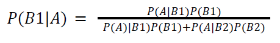
P(A|B1): Probabilidad de que la prueba sea positiva si el Sr. K tiene la enfermedad.
P(B1): Probabilidad a priori de que el Sr. K tenga la enfermedad.
P(A|B2): Probabilidad de que la prueba sea positiva si el Sr. K no tiene la enfermedad.
P(B2): Probabilidad a priori de que el Sr. K no tenga la enfermedad.
El resultado P(B1|A) nos da la probabilidad de que el Sr. K realmente tenga la enfermedad, dado que la prueba fue positiva. Esto nos permite ajustar nuestras
creencias iniciales en función de la nueva evidencia.
De esta forma el teorema de Bayes establece cómo calcular la probabilidad de un evento, dada la probabilidad condicional de ese evento en relación con otros
eventos. El teorema se utiliza para invertir el orden de causa y efecto al calcular la probabilidad de un evento dado su efecto observado. [2]